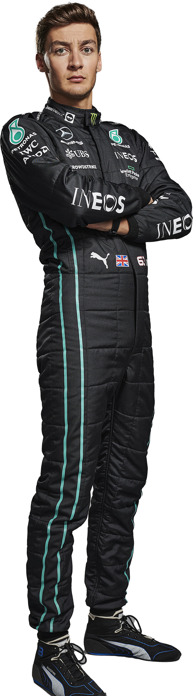

LEWIS HAMILTON
| Nacionalidad | Reino Unido |
| Nacimiento | 07·01·1985 |
| Estatura / Peso | 1,74 m / 73 kg |
| Campeón | 2008, 2014, 2015, 2017, 2018, 2019, 2020 |
| GP iniciados | 310 |
| Victorias | 103 |
| Veces en podium | 191 |
| POLE POSITIONS | 103 |
| Primera línea | 174 |
| Vueltas rápidas | 61 |
| Puntos | 4.405,5 |
| Vueltas en carrera | 17.681 |
| km en carrera | 88.945 |
| GP en cabeza | 184 |
| Vueltas en cabeza | 5.442 |
| km en cabeza | 27.694 |


GEORGE RUSHELL
| Nacionalidad | Reino Unido |
| Nacimiento | 15·02·1998 |
| Estatura / Peso | 1,85 m / 73 kg |
| Mejor posición | 4 (2022) |
| GP iniciados | 82 |
| Victorias | 1 |
| Veces en podium | 9 |
| POLE POSITIONS | 1 |
| Primera línea | 6 |
| Vueltas rápidas | 5 |
| Puntos | 294 |
| Vueltas en carrera | 4.473 |
| km en carrera | 22.284 |
| GP en cabeza | 5 |
| Vueltas en cabeza | 158 |
| km en cabeza | 638 |